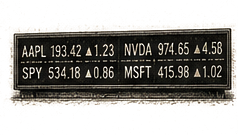
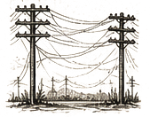

SPY
Current: $753.12Change: +1.84 (+0.24%)
Updated:
Source: yahoo_chartFreshness: fresh


As the market opens, investors are navigating a landscape marked by geopolitical uncertainties and mixed earnings reports, particularly in the energy and technology sectors.

Headline: Market Cautious Amid Geopolitical Tensions and Earnings Divergence
Setup: As the market opens, investors are navigating a landscape marked by geopolitical uncertainties and mixed earnings reports, particularly in the energy and technology sectors.
Why It Matters: Understanding the interplay between geopolitical events and earnings performance is crucial for assessing market sentiment and potential volatility.
What Changed Since Yesterday: No significant changes; the market remains cautious with ongoing geopolitical tensions and mixed earnings signals.
What Joshua Should Watch: Focus on the implications of the US-Iran tensions and the divergence in earnings within the energy sector.
Why This Matters: The current geopolitical climate and earnings reports can significantly influence market direction and investor sentiment.

- What happened overnight: Global markets are reacting to renewed tensions in the US-Iran conflict, which could impact oil supply and prices.
- What changed materially: The IEA reported that world oil demand is set for its first annual decline since 2020, influencing energy stocks.
- Which assets/sectors are affected: Energy stocks, particularly oil futures, are experiencing volatility; technology stocks are also under scrutiny due to mixed earnings reports.
- Noise or regime input: The geopolitical tensions and earnings divergence suggest a potential regime shift rather than mere noise.
Why This Matters: The interplay of geopolitical tensions and earnings performance can significantly influence market direction and investor sentiment, making it essential to monitor these developments closely.
- WOPR learning pipeline: Healthy caution
- Candidates evaluated 24h: 500
- Current gate: Confidence/Evidence
- Notification ledger events in 24h: 30
- Pending orders created/canceled/filled/expired: 6/3/1/1
- Pending lifecycle interpretation: Pending-order cancellations have trackable reasons and no obvious rapid churn pattern.
- Portfolio risk: Label: Low / Score: 24.0
- Latest intelligence gap report: intelligence_gap_report_2026-07-12.pdf
Why This Matters: The active gate is Confidence/Evidence, so the key question is why candidates are stopping before approval, not how to force trades.

- Sentinel role: infrastructure and operational status only.
- State: ONLINE
- Last successful validation: unknown
- Payloads accepted/rejected: unknown/unknown
- Node health score: 96
Why This Matters: Sentinel is ONLINE, so Joshua should use its context only to the extent the latest accepted pulse is fresh and authenticated.

Joshua currently favors DELL because it is the highest-ranked available internal opportunity from Portfolio Intelligence.
Candidate confidence: 78.8
Portfolio risk: Label: Low / Score: 24.0
Supporting evidence: Prediction evidence: UP 5.0% at 65 confidence. / WOPR history: 21847 scored sample(s), 81.8% win rate. / DELL is a strong standalone trade, but it increases portfolio concentration. / Breadth support: healthy (69.5/100). / Next high-impact macro event: Advance Monthly Sales for Retail and Food Services at 2026-07-16T12:30:00+00:00.
Contradicting evidence: none captured
Missing evidence: Canonical symbol-specific price context is unavailable in the core snapshot. / No canonical symbol-specific material event is linked.
Invalidation conditions: Candidate confidence or portfolio-fit evidence deteriorates materially.
Why it matters: DELL is an observation-only review target, not an instruction; Joshua should compare its evidence stack against market context and recent gate failures.
Why This Matters: A top setup earns attention, not automatic allocation; the brief should help Joshua decide what evidence is missing.

- How should the divergence in earnings within the energy sector influence our outlook on energy stocks?
- What specific geopolitical developments should we monitor that could impact market stability?
- How does the current VIX level inform our risk management strategies?
- What implications do the IEA's oil demand forecasts have for our energy sector positioning?

The market is currently navigating a complex landscape influenced by geopolitical tensions and mixed earnings reports. The energy sector is particularly affected, with oil prices reacting to the US-Iran conflict. The VIX remains stable, indicating a cautious sentiment among investors. Portfolio risk is low, but the divergence in earnings signals a need for careful monitoring.

No significant changes; the market remains cautious with ongoing geopolitical tensions and mixed earnings signals.

Current value unavailable.
No warnings from yesterday were confirmed; the market context remains stable but cautious.

Joshua's useful question today is whether the new top setup won on better evidence or merely on weaker competition.

| Can trigger trade | no |
| Can modify trade rules | no |
| Can add watch items | yes |
| Can add review questions | yes |
| Can adjust confidence notes | yes |
| Input policy | external_intelligence_plus_sanitized_internal_observations |
| External policy | ChatGPT independently evaluates current world/market context where available and labels unknowns. |
| Internal policy | Joshua/WOPR/Sentinel facts are supplied as sanitized observation-only summaries. |
| Editorial model | gpt-4o-mini |

- Unavailable - no eligible symbol was present in the persisted opportunity, earnings, or event universe.

- Unavailable
- Unavailable - the persisted snapshot contains no scheduled macro or earnings event.
- Current macro regime: unavailable; change probability: unavailable.
- Risk dashboard: unavailable (unavailable/100); breadth: unavailable; sentiment: unavailable.
- Scenario board only - a current-state observation, not a forecast or execution instruction.
- Seat on rotation: INFRASTRUCTURE OBSERVER.
- Today's recorded desk note: Sentinel role: infrastructure and operational status only.
Market Cautious Amid Geopolitical Tensions and Earnings Divergence
Storm meter: Cautious
Joshua currently favors DELL because it is the highest-ranked available internal opportunity from Portfolio Intelligence.
Candidate confidence: 78.8
Portfolio risk: Label: Low / Score: 24.0
Supporting evidence: Prediction evidence: UP 5.0% at 65 confidence
Observation mode: observation_only
Watch: US-Iran tensions; why it matters: Escalating tensions could disrupt oil supply and impact market stability.; would change Joshua's view: A de-escalation or resolution of tensions could stabilize oil prices and improve market sentiment.
Question: How should the divergence in earnings within the energy sector influence our outlook on energy stocks?